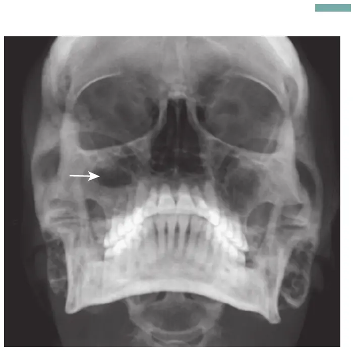
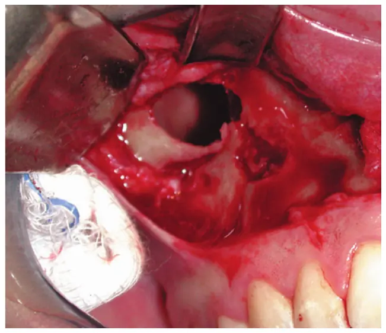

نسخه استخراجشده؛ ترجمه یا تأیید علمی انجام نشده است. وضعیت: captured
درمان اولیهی سینوزیت ماگزیلاری، پیش از هر آنتیبیوتیکی، چهار اقدام دارد:

و یک تمایز مهم که تصمیم آنتیبیوتیک را میسازد:
بسیاری از موارد سینوزیت از آلرژی ناشی میشوند که به احتقان و تغییر تخلیهی طبیعی سینوس میانجامد — و سینوزیت آلرژیک اغلب به همان اقدامات پیشگفته پاسخ میدهد.
ولی وقتی سینوزیت پیامد یک فرایند عفونی باشد، استفاده از آنتیبیوتیک اندیکاسیون دارد — و دانستن باکتریهایی که به احتمال بیشتر در سینوزیت جدا میشوند، برای انتخاب آنتیبیوتیک مهم است.
یعنی: پیش از نوشتن نسخه، باید بدانی منشأ ادنتوژنیک است یا نه — چون فلور این دو متفاوت است، و در اسلاید بعد میبینی که دو فهرست دارویی متفاوت میخواهند.
و کشت: هرجا ممکن است از ترشح چرکی نمونهی کشت و آنتیبیوگرام بگیر؛ نتیجهاش برای وقتی است که ارگانیسم مقاوم است یا عفونت به درمان اولیه پاسخ نمیدهد. اگر ظرف ۷۲ ساعت پاسخی نبود، درمان و آنتیبیوتیک را بازنگری کن.
فهرست اول — سینوزیت غیرادنتوژنیک: محتملترین ارگانیسمها H. influenzae، S. aureus، S. pneumoniae، و انواعی از استرپتوکوکهای بیهوازی هستند. اینها فلور حفرهی بینیاند و موکوستاز درون سینوس اجازهی کلونیزاسیونشان را میدهد.

و گزینههای آنتیبیوتیکی برای درمان سینوزیت ماگزیلاری غیرادنتوژنیک: آموکسیسیلین، تریمتوپریم-سولفامتوکسازول، آموکسیسیلین-کلاوولانات، آزیترومایسین، و سفوروکسیم.
فهرست دوم — سینوزیت ادنتوژنیک: معمولاً ارگانیسمهایی را درگیر میکند که با عفونتهای ادنتوژنیک معمول همراهاند — شامل استرپتوکوکهای هوازی و بیهوازی و بیهوازیهایی مانند باکتروئیدس و انتروباکتریاسه.
و نتیجهگیری ساده و کاربردی: بنابراین آنتیبیوتیکهایی مانند پنیسیلین، کلیندامایسین، و مترونیدازول — که عموماً در برابر عفونتهای ادنتوژنیک مؤثرند — در برابر سینوزیت با منشأ ادنتوژنیک هم مؤثرند.
پس منطق ساده است: اگر منشأ دندانی است، همان داروهایی که برای عفونت ادنتوژنیک مینویسی کار میکنند؛ و اگر نیست، به فهرست متفاوتی نیاز داری که هموفیلوس و استافیلوکوک را پوشش دهد.
و وقتی درمان دارویی کافی نیست — عمل کالدول-لوک: اگر بیماری سینوسی پابرجا بماند، ممکن است لازم شود بافتهای بیمار با عمل کالدول-لوک از راه دیوارهی جانبی ماگزیلا و بالای آپکس دندانهای باقیمانده برداشته شوند.
یعنی: یک پنجرهی استخوانی در دیوارهی قدامی ماگزیلا از راه برش وستیبولار ساخته میشود تا سینوس در معرض دید و دبریدمان قرار گیرد.
و یک ضایعهی بیآزار که باید بشناسی — سودوکیست آنترال: در ۲ تا ۱۰ درصد رادیوگرافیهای پانورامیک بهصورت کدورت گرد و کمرنگ دیده میشود. حاصل تجمع سرم (نه موکوس سینوس) زیر مخاط سینوس است، پیامد بالینی ندارد، درمان نمیخواهد و اغلب با گذشت زمان ناپدید میشود.
با کیست احتباسی یکیاش نگیر: کیست احتباسی از انسداد مجرای غدد موکوسی سینوس پدید میآید؛ موسین انباشته با اپیتلیوم احاطه میشود و کیست حقیقی میسازد — ولی معمولاً چنان کوچک است که در رادیوگرافی دیده نمیشود.